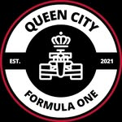

Loading next race…
Race showing
Checking the calendar
Details will appear here.
- Where
- To be announced
- When
- —
- Coverage
- Race session

QUEEN CITY F1 InstagramCharlotte, North Carolina
Your home for Formula 1 in Charlotte. Find the next race, follow the championship, and meet the crew before the five lights go out.
Next club meetup
Join Charlotte race fans for the next Grand Prix. Event details update here as soon as the club confirms the venue.
Details will appear here.
Loading the race weekend…
The race briefing will load with the next event.
New to the club?
No expert knowledge required. Pick a driver, grab a seat, and enjoy the noise.
Reservation or walk-in details will appear on the meetup card once the venue confirms them.
The event card identifies the showing format. Very early races may be presented as replays; confirmed details will always be labeled.
Absolutely. The club welcomes first-time viewers, longtime fans, and every team allegiance.
Team gear is encouraged but never required. Come as you are.
The season
Every Grand Prix in one clean view. Times are shown in your local timezone, with completed results added as the season unfolds.
Live schedule powered by Jolpica F1.
Championship watch
Follow the drivers at the sharp end of the field. Standings refresh throughout the season as every point changes the championship picture.
Join the conversation
Watch parties are only part of the grid. Pick the community that fits how you follow race week.
About Queen City F1
A home for the people who plan their weekends around lights out.
Queen City F1 is an independent community created to bring Charlotte-area Formula 1 fans together. We gather for race-day watch parties, share the highs and heartbreaks of the season, and make room for everyone—from lifelong supporters to people watching their first Grand Prix.
The goal is simple: make it easy to find the next race, meet good people, and enjoy the sport together.
Meet the founders
Founder names, photos, roles, and stories can be added here when the club is ready.
Co-founder · Club role
Add a short introduction: how they found Formula 1, why they helped start Queen City F1, and what they enjoy most about bringing Charlotte fans together.
Favorite driver or team · OptionalCo-founder · Club role
Add a short introduction: their connection to racing, what they contribute to the club, and the race weekend they never miss.
Favorite circuit · OptionalFounding member · Club role
Add a short introduction: what race day means to them and what they hope every new member finds in the Queen City F1 community.
First Grand Prix watched · OptionalYour seat is waiting
Check the next meetup, follow Queen City F1 for venue announcements, and arrive ready for lights out. New fans and seasoned supporters are equally welcome.
Find the next meetup